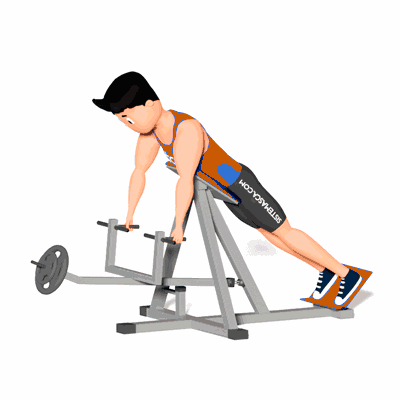

Remada Cavalinho no Aparelho

É um exercício composto onde há envolvimento de uma grande quantidade de massa muscular para sua realização. Nele o latíssimo do dorso, trapézios e rombóides são os mais ativados.
Ficha Técnica
Tipo: Musculação
Grupo Muscular: Costas
Aparelho: Nenhum
Músculos: Nenhum
Como realizar
- Deitar-se no aparelho, com o apoio na altura do esterno;
- Segurar a barra com pegada neutra e os braços estendidos;
- Flexionar os cotovelos e trazer a barra em direção ao tronco, sempre mantendo os braços o mais perto possível do corpo;
- Contrair o máximo os músculos das costas e depois lentamente retornar à posição inicial.
 RC STORE
RC STORE